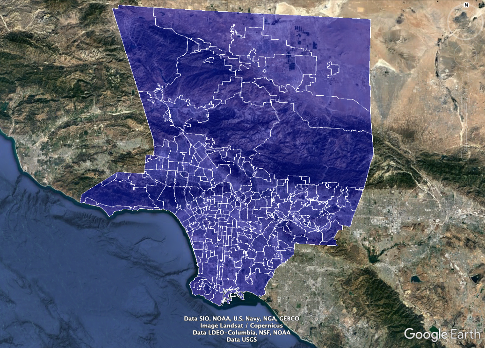

Introduction
This assignment is going to use the principles of energy balance to examine how changing properties of urban environments alter the temperature of urban landscapes. In urban areas, the distribution of materials such as asphalt and concrete has been shown to lead to higher air temperatures compared to rural counterparts. This is known as the urban heat island (UHI) effect. High temperatures can be harmful to the health of residents, and in order to mitigate the UHI cities adopt strategies like increasing tree cover to increase shade and cooling, or increasing the reflectivity, also called albedo, with white paint. However, these strategies are not always evenly distributed throughout a city and may create environmental inequity. Read more about this phenomena here.
We’ve assembled a dataset that captures a snapshot of average midday temperatures in August, the amount of vegetation, and a host of social/economic data across each neighborhood in the county of Los Angeles. The temperature data is from the Landsat satellite’s surface thermal data and was acquired in the Spring (April) and Summer (August) of 2020. The vegetation data is characterized by the Normalized Difference Vegetation Index (NDVI), and is taken from similar dates. NDVI is a measure of “greenness” and higher values of NDVI indicate a greater amount of green vegetation within each neighborhood. The neighborhood information is collated from the incredibly awesome Mapping LA project developed by the LA Times, which is worth checking out. See a description of each column in the dataset at this link.
For a visual reference of the LA times project, here is a map of the area of the LA basin and the neighborhoods: 
Part I: Exploring Los Angeles County data
In this assignment, we’ll be exploring surface temperatures of different neighborhoods in Los Angeles County. The first thing we need to do is load in our data, which we do with the following code:
# load in data as a CSV
LA_nbhds <- read.csv("data/ESM203_F2020_Ass1.csv")Observations
Let’s start by just exploring our data. One of the first things we’d want to explore is what data is there. Run the code below to load the data and output the column names of all the data.
# output column names
colnames(LA_nbhds)These column names tell us which variables are included in the data set. See a description of each column in the dataset at this link.
Let’s say you spent the evening playing around with the data looking for trends. Ideally we’d have a hypothesis in mind that we wanted to test, but sometimes in science you get lucky and stumble upon your hypothesis. So you were plotting variables (column names) against each other to see if there were any obvious correlations.
What are trends?
When we’re plotting data we’re looking for a relationship between two variables. Below are three different correlations we could expect. We have a positive correlation if Y increases with X , we have a negative correlation if Y decreases with X, and a seemingly randomly distribution of points indicates no correlation. At times correlations can be hard to detect so we will add a trend line and use statistics. Here is a short description.

Summer NDVI v. surface temperatures
So in our exploration, one of the plots we made was mean August surface temperature against NDVI. We notice that this trend looks somewhat promising, and decide to plot a trend line. Do this by running the chunk below.
LA_nbhds %>%
dplyr::filter(NDVI_SUMMER > 0 & NDVI_SUMMER < 1) %>%
ggplot() + geom_jitter(aes(x=NDVI_SUMMER, y=TEMP_SUMMER)) +
geom_smooth(aes(x=NDVI_SUMMER, y=TEMP_SUMMER), method=lm) +
labs(x = "August NDVI", y="August Temperature (deg C)") +
ggtitle("Mean August 2020 surface temperature and NDVI of LA County")Answer these questions:
- Describe the relationship between August 2020 Mean Temperature and NDVI.
- What might be some possible explanations as to why this relationship exists? There’s no right answer here, go wild with it.
- Now, based upon this observed relationship, form a simple causal statement. This is your hypothesis which we will test in this assignment using our theoretical knowledge learned in class. There is no “right answer,” so please don’t go back and change this.
Part II: Understanding the surface energy balance model
We’re going be using equations throughout this class, so let’s learn how to become more literate in equations. To do this we’re going to explain the components and then draw a conceptual model. This may take some time, but its an extremely important skill. So take a deep breath, be patient with yourself, and dive in.
Here is the somewhat simplified equation we will be using, based off of the equation on page 211 of Chapter 7 in Ecological Climatology by Bonan.
\[(1 - \alpha)S_{\downarrow} + L_{\downarrow} = L_{\uparrow} + H + \lambda E + G\]
Answer these questions:
Define each of the terms of the equation and include one sentence of what the flux is in plain language. If you need a hint, check out the chapter on Surface Energy Fluxes.
- \((1 - \alpha)S_{\downarrow}\)
- \(L_{\downarrow}\)
- \(L_{\uparrow}\)
- \(H\)
- \(\lambda E\)
- \(G\) (We will be ignoring G for this assignment, but still please define it.)
- Describe the full equation in no more than three sentences.
- Draw a conceptual model of the equation from above, showing each of the fluxes going in and out of the surface. If you’re unsure what a conceptual model is please reference the slides or google it. Hint: you’ve seen the conceptual model you should be drawing before. Insert either a hand drawn or computer created conceptual model into the document where you are recording your answers.
Part III: Solving for surface temperature
Given our theoretical understanding of surface energy balance, we can create a model which solves for surface temperature based on available energy. With this model, we can perform sensitivity analyses for different variables that affect temperature. We do this by changing variables to see how the surface temperature being output changes. We will be performing two such sensitivity analyses in this section: one for albedo and one for vegetation. We will do the first together, and you will do the second.
The first thing we need to do is define our model. We do so with the code below.
# define the stefan-boltzmann constant
sigma = 5.6704*10^-8 #W/m^2/K^4 stefan-boltzmann constant
# Tetens eq. to solve for saturated vapor pressure (used in LE eq.)
sat_vp <- function(T){
e <- 0.61078*exp(17.27*T/(T+237.3))
return(e)
}
# Our model: surface energy balance returns surface temperature
# input is surface temperature, represented as x (in celsius)
# veg represents % veg cover
# alpha is albedo
# eps is surface emissivity
# T_a is ambient atm temp in Celsius
# r_H is sensible heat resistivity
# K_inc is in W/m^2, incoming shortwave radiation
seb <- function(x, veg=0, alpha=0.15, eps=0.95, T_a=28, r_H=20, K_inc=800){
r_w = 1/(veg*50) # scaler for veg
L_inc = 0.9*sigma * (T_a+273.15)^4 # incoming longwave radiation [W/m^2]
R_av = (K_inc*(1-alpha) + L_inc) # net available energy at surface [W/m^2]
L_out = eps*sigma*(x+273.15)^4 # outgoing longwave radiation [W/m^2]
H = 1.15*1005*(x-T_a)/r_H # sensible heat flux [W/m^2]
E = 1.15*1005/66.5*(sat_vp(x) - sat_vp(T_a))/r_w # latent heat flux [W/m^2]
val = - R_av + L_out + H + E
return(val)
}Albedo
We learned in class that albedo affects the amount of shortwave radiation entering the surface by reflecting some back. Albedo affects the available energy at the surface, which we will call \(R_{av}\), through the equations:
\[S_{net} = S_{\downarrow}*(1-\alpha)\]
\[R_{av} = S_{net} + L_{\downarrow}\]
Where \(\alpha\) represents albedo. Use the code below to explore how the model outcomes change when we change albedo, and to answer the questions below.
Here we define a function test_albedo that runs the surface energy balance (seb) model, and outputs the steady state temperature for a given albedo.
# temp_s is surface temperature
range = c(0,100)
test_albedo <- function(x){
temp_s = uniroot.all(seb, range, alpha=x)
return(temp_s)
}# You can solve for surface temp by inputting specific values of albedo, where x is albedo
# Replace x with any value between 0 and 1.
test_albedo(x=0.9)# The code below runs the above function for every value of albedo in the 'alpha' vector below
# quick SA for veg parameter
alpha <- seq(0,1, by=0.05)
test <- sapply(X=alpha, FUN=test_albedo)
# combine input and output
albedo_df <- data.frame(alpha, test)
# plot data frame (do this together in discussion)
ggplot(albedo_df) + geom_point(aes(x=alpha, y=test)) +
labs(x="albedo", y="surface temperature (deg C)")Answer these questions:
- What happens to the surface temperature when albedo increases?
- Think about a roof made of asphalt and a roof that has been painted white. Which would have a higher albedo?
- Which would have a higher surface temperature?
Vegetation
Now it’s your turn do a sensitivity analysis based upon the amount of vegetation, but first we dive a little deeper into the latent energy equation.
Latent energy is a convective flux, which - from lecture - means that its magnitude is proportional to a gradient and inversely proportional to a resistance:
\[\lambda E \propto \frac{\Delta e}{r_W}\]
In reality, as we’ve seen in the reading, this equation is a bit more complicated. For now, don’t get too stuck on this: all of the additional terms are related to converting the mass flux of water implied by a vapor gradient into an energy flux. This energy flux is a bit obscure (it’s not called “latent” for nothing), but it is the transport of energy away from the surface when there is net evaporation of water at the surface and then subsequent transport of water vapor from the surface to the atmosphere. We only include it to elaborate on the actual equations you are using and to ensure that the equation is dimensionally correct.
\[\lambda E = -\frac{\rho*C_p}{\gamma}*\frac{e_a - e_{*}[T_s]}{r_W}\]
Where \(-\frac{\rho*C_p}{\gamma}\) represents the density of air, \(\rho\) (kg/m\(^3\)), specific heat capacity, \(C_p\) (J kg\(^{-1}\) \(^{\circ}\)C\(^{-1}\)), and the psychrometric constant, \(\gamma\) (Pa/\(^{\circ}\)C). All of these terms are fairly constant, so let’s move on to the second group of terms, which vary much more in time and space.
The numerator of the second part, \((e_a - e_{*}[T_s])\) corresponds to the \(\Delta e\) term in the simplified equation above. It represents the gradient between the atmospheric vapor pressure, \(e_a\) (Pa), and the surface vapor pressure, \(e_{*}[T_s]\) (Pa). This gradient is almost always negative, because moisture in plants and the soil usually keeps the surface vapor pressure higher than the atmosphere. The resistance to vapor transfer between the surface and the atmosphere is \(r_W\) (s/m). All things being equal, the resistance to vapor transport, \(r_W\), is determined by amount of vegetation at the surface. Check out section 7.2 to learn more.
Answer these questions:
- If \(r_W\) - the resistence to water vapor transport - is determined by the amount of vegetation, then what time of year might you expect the value of \(r_W\) to be largest, and why?
- How might the value of \(r_W\) change if vegetation became water stressed, and why?
- Over the course of a day, which value - \(e_a\) or \(e_{*}[T_s])\) - do you expect to change the most, and why?
- What time of day might you expect the surface water vapor gradient, \((e_a - e_{*}[T_s])\), to be most negative, and why?
- Suppose for a moment that the vapor pressure gradient became positive, which means that the atmospheric vapor pressure, \(e_a\) is greater than the surface vapor pressure, \(e_{*}[T_s]\). What do you think would happen to the latent energy flux? How might this condition alter the surface energy balance? Can you think of an example when this condition has probably happened or is happening?
For this model, we will use the fraction of vegetation cover, called ‘veg’, to account for changes in the resistance to water vapor transport when vegetation is present.
In the same way we did a sensitivity analysis for albedo, this chunk does a sensitivity analysis for vegetation. Run it to find out how surface temperature changes with vegetation cover.## Run the below code to solve for surface temperature
# temp_s is surface temperature
range = c(0,100)
test_veg <- function(veg){
temp_s = uniroot.all(seb, range, veg=veg)
return(temp_s)
}
# quick SA for veg parameter
veg <- seq(0,1, by=0.05)
test <- sapply(X=veg, FUN=test_veg)
# copy and paste the code from the albedo testing above, then create a plot of veg vs. surface temperature
# combine input and output
veg_df <- data.frame(veg, test)
# plot data frame (do this together in discussion)
ggplot(veg_df) + geom_point(aes(x=veg, y=test)) +
labs(x="vegetation (%)", y="surface temperature (deg C)")We have created a function that lets you plot the different energy fluxes based on the amount of vegetation.
## returns bar plot of the different fluxes
plot_fluxes <- function(veg_cov, eps=0.95, T_a=28, r_H=20, K_inc=800){
alpha=0.2
range=c(1,100)
x <- uniroot.all(seb, range, veg=veg_cov, alpha=0.2)
r_w = 1/(veg_cov*50) # scaler for veg
L_inc = 0.9*sigma * (T_a+273.15)^4 # incoming longwave radiation [W/m^2]
R_av = (K_inc*(1-alpha) + L_inc) # net available energy at surface [W/m^2]
L_out = eps*sigma*(x+273.15)^4 # outgoing longwave radiation [W/m^2]
H = 1.15*1005*(x-T_a)/r_H # sensible heat flux [W/m^2]
E = 1.15*1005/66.5*(sat_vp(x) - sat_vp(T_a))/r_w # latent heat flux [W/m^2]
fluxes <- data.frame(flux=c("R_av","L_out","H","E"), value=c(R_av,L_out,H,E))
fluxes$flux <- factor(fluxes$flux, levels=c("R_av", "L_out", "H","E"))
plot <- ggplot(fluxes) + geom_col(aes(x=flux, y=value, fill=flux)) +
ylab("energy [W/m^2]")
return(plot)
}plot_fluxes(veg_cov=#) to see how different amounts of vegetation affect the different major fluxes of the energy model. Copy and paste the line to plot multiples of this plot.
# plot_fluxes shows a bar plot of the different energy fluxes. Change veg between 0 to 1 to see how the latent and sensible energy change
plot_fluxes(veg_cov=1)Answer these questions:
- How does the presence of vegetation affect the modeled surface temperature?
- Explain why this relationship occurs. Think back to the equation we had you describe.
- Does this relationship explain the initial graph between NDVI and temperature above (in the introduction)? Explain. Include a comment about your initial hypothesis as well.
- We’ve only simulated the vegetation effects on surface temperature through its impact on the resistance to water transport (\(r_W\)). What other components of energy balance might the presence or absence of vegetation alter?
- You’ve now explored the relationship between vegetation and temperature as well as albedo and temperature. If someone were to ask you if a green (vegetated) roof or a white roof were better from an energy balance perspective, how might you use this model to answer that question?
Part IV: Connecting to socioeconomic data
Remember the NDVI. v. temp plot above? Run it one more time if you need a refresher:LA_nbhds %>%
dplyr::filter(NDVI_SUMMER > 0 & NDVI_SUMMER < 1) %>%
ggplot() + geom_jitter(aes(x=NDVI_SUMMER, y=TEMP_SUMMER)) +
geom_smooth(aes(x=NDVI_SUMMER, y=TEMP_SUMMER), method=lm) +
labs(x = "August NDVI", y="August Temperature (deg C)") +
ggtitle("Mean August 2020 surface temperature and NDVI of LA County")LA_nbhds) and create your own plots. Remember you can get the list of columns with the code below, and descriptions of the variables can be found here.
colnames(LA_nbhds)## plot hereAnswer these questions:
- Take a screenshot of your final plot(s) and include it in your answer document. Make sure to include labels and units!
- Based on your plot(s) what relationship exists? Write a short (1-2 paragraph max) reaction/response to your findings, focusing on what they imply for issues related to environmental management, planning, and/or environmental justice. While your response should refer to the specifics of your plots/presentation, you do not need to do an exhaustive analysis or find citations to support your inference.
- For this entire assignment: Share a thought or lesson that clicked for you. What was the most interesting part?